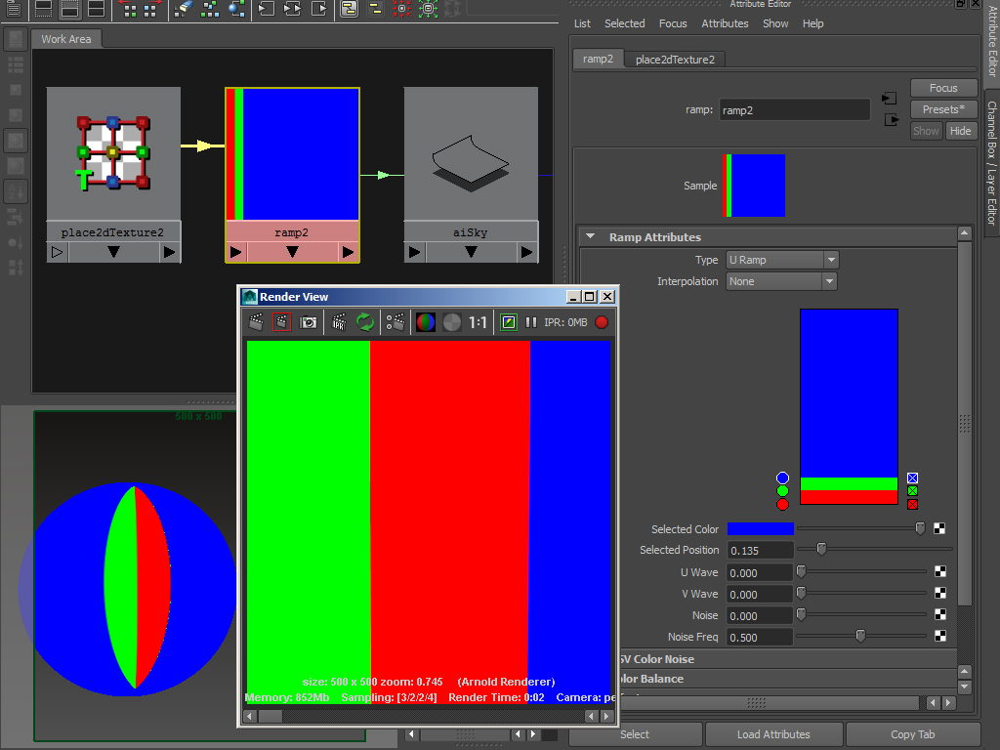

Maya 必须先加载 MtoA 插件，然后才能在 UI 中打开任何对象。这是 Maya 工作方式的一个特点（评估 AE 模板后，不会对其进行刷新）。最佳做法是确保将 MtoA 设置为自动加载，这样就可以避免出现此问题。
渲染出 AOV 时，如果“公用”(Common)选项卡的“文件输出”(File Output)部分中含有“文件名前缀”(File name prefix)，例如“awesome_render”，那么系统不会渲染任何 AOV 通道，而不论它们是否启用。这是 Maya 中存在的一个问题。原因是，如果显式设置了“文件名前缀”(File name prefix)，Maya 在计算实际文件名时会忽略部分参数。尝试在文件名中使用
您需要设置渲染样例的类别，以便让 Maya 知道它应该将样例与 Arnold 结合使用。样例类别可在元数据中通过源代码设置：
AiMetaDataSetInt(mds, NULL, "maya.id", 0x00115H09);
AiMetaDataSetStr(mds, NULL, "maya.classification", "shader/surface"); 也可以在着色器库内的 .mtd 文件中设置。它应该与 .so/dll 具有相同名称和位置。例如：
[node FB_skin]
desc STRING "Skin Shader."
maya.id INT 0x00115H09
maya.name STRING "aiFbSkin"
maya.classification STRING "shader/surface" 当前，天穹灯光和区域光等 Arnold 自定义灯光不会出现在灯光链接窗口中。
解决方法是使用 defaultLightSet 更改 Arnold 灯光的灯光链接选项（确保在灯光链接窗口中进行更改后刷新 IPR）。
灯光链接窗口中的 Arnold 替代对象
MtoA 依靠 Maya 来细分 NURBS，然后再将其作为多边形网格发送到 Arnold。MtoA 不支持简单的“简单细分选项”(Simple Tessellation Options)，但支持“高级细分”(Advanced Tessellation)下的“主细分属性”(Primary Tesselation Attributes)（请参见下图）：
每个跨度的等参线数 - UV
(1,3,6,9)
仅当将 Maya 文件纹理与天空 着色器或 skydome_light 结合使用时，Maya 视口中的硬件纹理才会起作用。例如，使用图像 着色器会在视口中返回黑色。
连接至天空 着色器时，设置为 U 方向的渐变纹理将无法正确渲染。要校正此问题，可在 Z 方向缩放天空 着色器 -1 并将“朝向”(Facing) 设置为“后”(back)。

U 向渐变渲染错误。
在 Z 方向缩放天空 -1 并将“朝向”(Facing) 设置为“后”(back) 可修复此问题。
请注意，读取 .tx 文件时，MtoA 使用 1024 纹理分辨率。如果需要更大的分辨率，则需在 Viewport 2.0 设置中启用“最大纹理分辨率区间限定”(Maximum Texture Resolution Clamping)，并调整“最大纹理分辨率”(Max Texture Resolution)。
以下着色设置可用于重新创建皮肤材质。
以下示例显示如何在对象之间共享 sss。
将同一个 sss_setname 用于对象之间需要 sss 的所有对象
以下设置显示如何将纹理贴图连接到 specular_roughness。
文件纹理的输出颜色 R -> standard_surface.specular_roughness